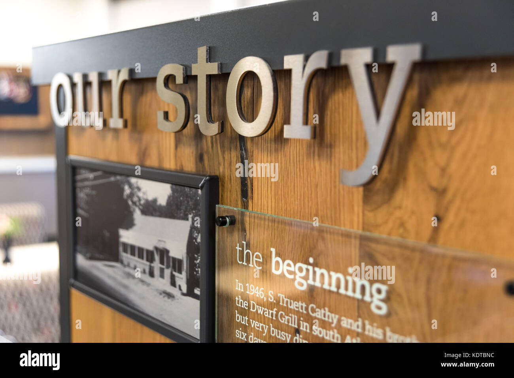
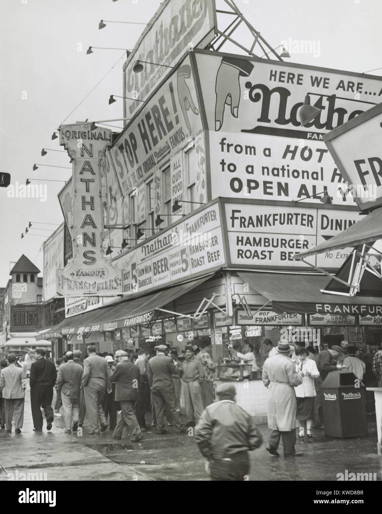
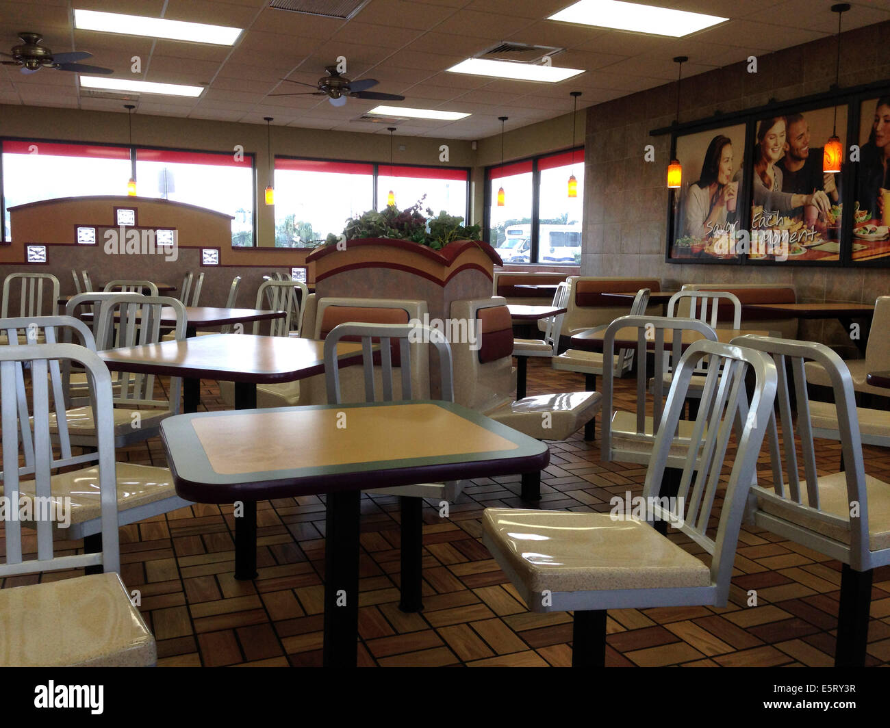

History

Fast food is the name for food that is made and presented to consumers in the short term. It is usually made from pre-heated
or pre-cooked ingredients, prepared in bulk and sold in packs to take away, but of course you can eat and order food at the
bar if there is a restaurant part. As a term, "fast food" first appeared in the Merriam-Webster Dictionary in 1951, but its
roots are much, much older. Fast food is a necessity of civilization because we have civilizations. From ancient to modern
times, street vendors have sold ready-to-eat food for those with less money and in difficult times. Today we have restaurants
that do the same. Here you can read more about the history of fast food. Different restaurant franchises can make the same fast
food differently. Restaurants of the same franchise may have different types of food depending on the location. Meet a wide range
of fast food and fast food restaurants here. The first place that had ready-to-eat food for sale was Ancient Rome. The city population
that lived in multi-storey apartment blocks called insulae did not have kitchens in them and had to buy food from food vendors. They
bought bread soaked in wine and ate stews and cooked vegetables in so-called popinas that were simple restaurants. The larger cities of
the Middle Ages had street vendors selling pies, cakes, flans, waffles, wafers, pancakes, and cooked meat. All these people and places were
selling their food to those who could not cook food on their own like the poor and the travelers. Those places that were close to the coast
and engaged in fishing developed fast food that included local shellfish or seafood.

As cars became more popular, drive-in restaurants began to appear throughout the United States. Car customers were served by carhops who began
wearing roller skates in the 1940s. The first McDonald's with fast food was opened by the McDonald brothers in 1948 (They had a restaurant before,
but it was not "fast food"). Soon after, others began opening their own fast food chains: Burger King and Taco Bell opened their own in the 1950s,
while Wendy began in 1969. Carl's Jr., KFC and Jack in the Box have existed before in other forms, just like McDonald’s, but as a fast food it
started to become popular which they reoriented. Hamburgers are not the only type of fast food sold in the world. Chinese food is also popular,
as are fish and french fries, sandwiches, pies, sushi, fried chicken, french fries, onion rings, chicken nuggets, tacos, pizza, hot dogs and ice
cream. In order to supply all restaurants with food of the same quality and standard, fast food operations produce food from processed ingredients
in a central supply facility and then ship it to the restaurants where it is prepared. The fast food industry continues to grow, although there are
indications that it is losing its market share due to fast food restaurants. McDonald’s, for example, is present in 126 countries on 6 continents and
has around 31,000 restaurants worldwide. Some criticize the fast food industry and its impact on humanity. They claim that his food is not healthy if
consumed often, that they are cruel to animals, that they exploit their workers, that they degrade local cultures because they change the taste of people
from traditional cuisines, and that fast food habits are associated with weight gain and obesity.

Our Alamy story began in 2014 with our first branch office, a modest kiosk in Zenica's Travnička cesta Street. Our, then small fast food with a valuable team of only
2 employees, quickly became recognizable throughout the city, especially in the ratio of price and quality of our products.
In just one year, we have become one of Zenica's leaders in food delivery. Our popularity grew to the point that our name and brand began to be misused by competitors,
which was the motive to register and protect our brand (logo, name, slogan) with the BiH Intellectual Property Office. Three years later (2017), we are opening another
branch office in the very center of the city, on Zenica Boulevard near the old market. In addition to the already well-known grilled specialties, mostly beef, we are
introducing novelties in the second branch, over 15 specialties made exclusively of chicken meat. Since we have always been focused on domestic meat and our own production,
in 2019 we are investing close to 500,000.00 KM in our meat processing plants. We buy and process meat exclusively of domestic origin, from our domestic producers and breeders.
In addition to using for our own needs, we distribute raw meat and processed products throughout BiH, and our customers are some of the very well-known retail chains. Our products
are also a frequent 'weekend option' and an indispensable part of family barbecues in nature, celebrations and the like. The end of 2020 and the beginning of 2021 represent a turning
point in our business. In December, we open our first butcher shop where we offer fresh and exclusively domestic meat and meat products that meet the highest technological and hygienic standards.
In January 2021, we open our first modern urban-type restaurant. We are introducing many new dishes, activating the concept of a call center for better communication with customers regarding food delivery and today
our team has over 40 full-time employees. In the middle of 2021, we will open our first franchise, which we located in Sarajevo, the Čengić Vila neighborhood, where we will become recognizable in a very short period
of time. In just a short time, we have made great strides in this city as well. At the end of May 2022, we will open our second franchise, this time in Tuzla in the Sjenjak Shopping Center, where local customers are
waiting for us with open arms and with pleasure because Tuzla knows how to recognize quality.